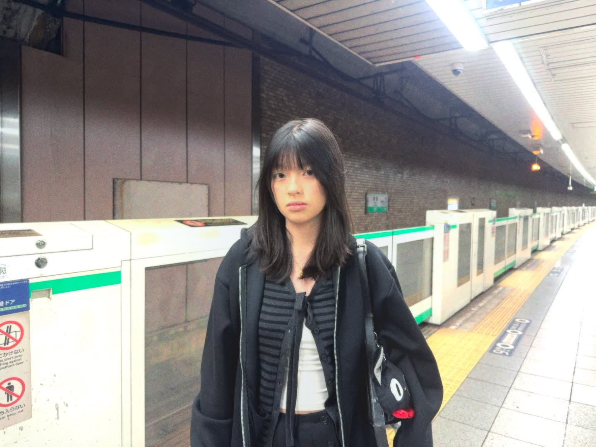
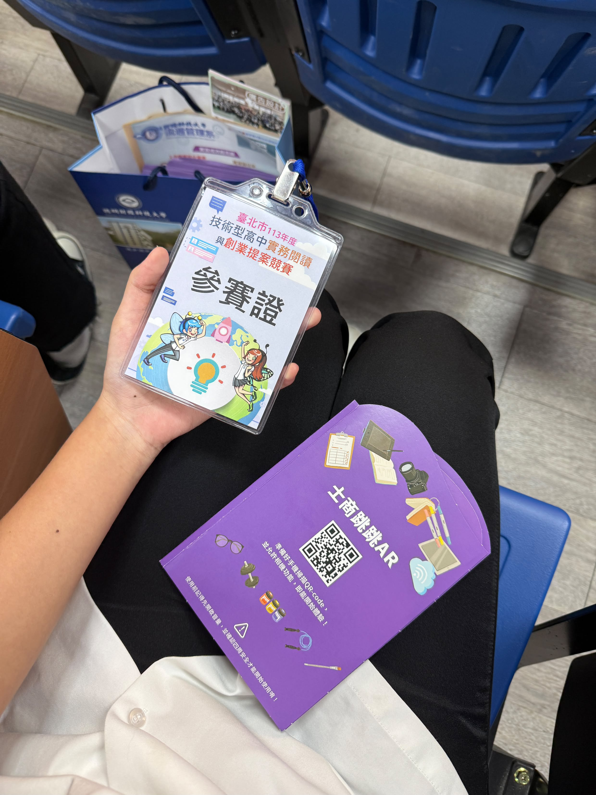
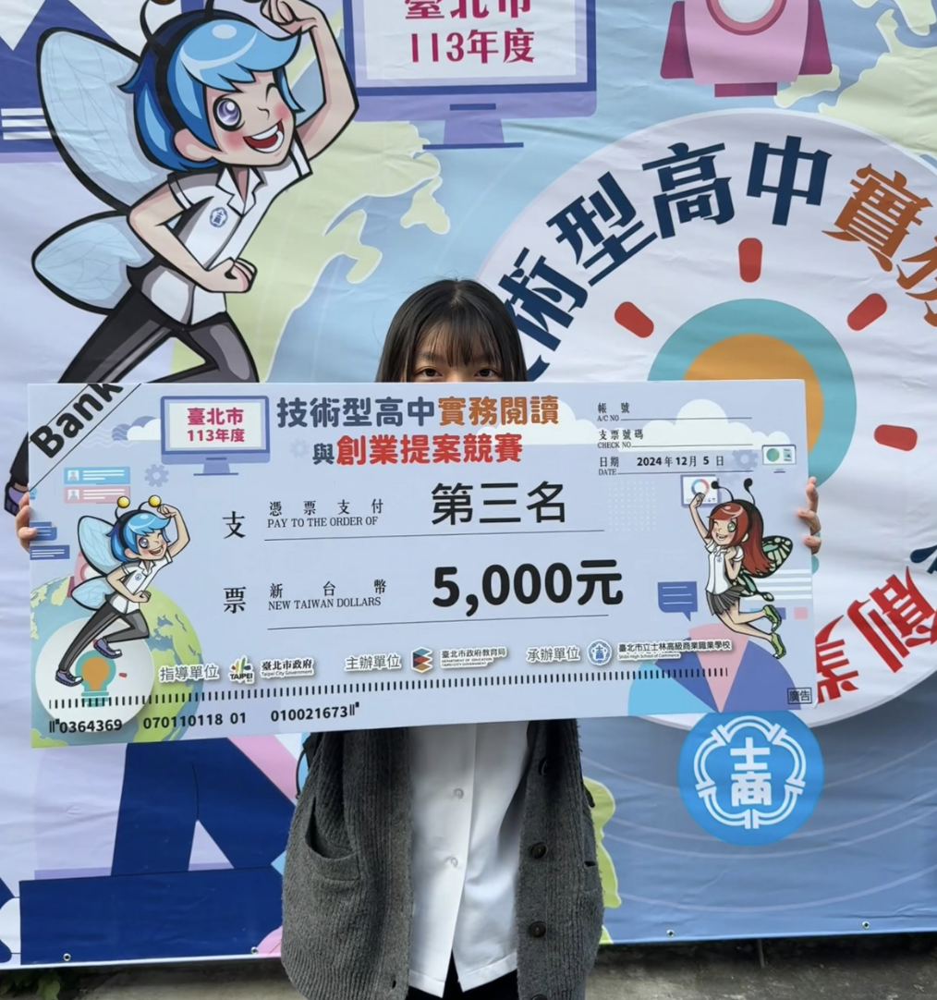
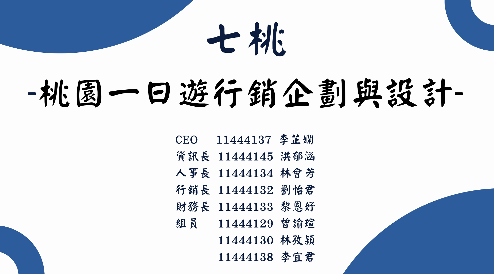

我是李芷嫻，目前就讀中原大學資訊管理學系。個性冷靜、重視執行力，遇到問題時會主動尋找方法，也喜歡透過實作把課堂上的知識應用到作品中。
我對程式設計與資訊應用保持好奇，樂於學習新的工具與技能。團隊合作時，我會整理想法、協調方向並盡力完成目標。
「把想法付諸行動，讓每一次嘗試都成為進步。」

放上你的個人照片我是李芷嫻，目前就讀中原大學資訊管理學系。個性冷靜、重視執行力，遇到問題時會主動尋找方法，也喜歡透過實作把課堂上的知識應用到作品中。
我對程式設計與資訊應用保持好奇，樂於學習新的工具與技能。團隊合作時，我會整理想法、協調方向並盡力完成目標。
網頁結構與版面設計
程式邏輯與問題拆解
語法、流程控制與陣列
Word、Excel、PowerPoint
內容統整、視覺呈現與企劃
溝通、整合與執行
※ 技能程度為自我評估，可依實際情況調整 CSS 中的 --level 數值。
參與設計結合擴增實境的校園介紹卡，將校園資訊以更有互動性的方式呈現。我在過程中協助發想與整合專題方向，並思考如何讓資訊傳遞更有趣、減少傳統紙本宣傳的使用。這次經驗讓我練習將資訊科技應用在實際需求上，也學習到團隊溝通與作品規劃的重要性。

AR PROJECT透過 AR 相關競賽，我與團隊將創意構想轉化為實際成果，並在有限時間內完成作品與呈現。競賽過程讓我體會到分工、溝通與細節調整的重要，也提升了面對挑戰時持續修正、完成目標的能力。獲得第三名是對努力的肯定，也成為我持續學習資訊應用的動力。

3RD PLACE在企業概論課程中，我參與「七桃—桃園一日遊」企劃，負責主導部分主題發想、行程方向與內容整合，並與組員共同完成宣傳影片、旅遊網站、海報及社群內容。透過這次企劃，我學習到如何從受眾需求出發規劃內容，也練習團隊協調、時間管理與將想法轉化為具體成果。

QITAO TOUR如果你想交流、合作，或進一步了解我的作品，歡迎與我聯絡。
xian960407@gmail.com ↗